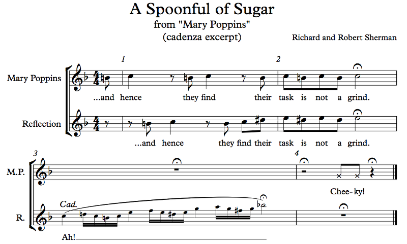

In the previous chapter we talked about melogenic and logogenic music. If you don't remember, go back and cmd-F one of these words.
Oh, I WENT THERE. Yes I did! But I'll re-explain for you anyway: melogenic music is where the melody comes first and the words fit to it; logogenic music is when the melody fits the rhythm of the words themselves. Western music is mostly melogenic and strict about time and meter, at least outside of some of the more highbrow artistic stuff. But manipulating time is such a basic musical and verbal instinct that we have plenty of ways to do it. By "manipulating time" I mean slowing down or stopping the pulse for an undetermined amount of time, at the discretion of the musicians (in an ensemble, there's usually one person who decides for everyone, but in a solo, the soloist has more freedom). Pausing and continuing are basic features of human speech, and we apply those to music, even melogenic music, usually at special points. We like slowing down at the end or at big moments, for example. We've already covered the tempo changes like the rit., so here are some of the symbols:

Example 3.11
The fermata just means to hold the note for as long as you(r conductor) feel(s) like. The implication is that it's longer than the note value, but really it's up to the leader to decide. The line back in middle school was that the fermata means "watch the conductor". On the other hand, girls sometimes like to wear shirts that say "hold me, I'm a fermata" or something similar. It's also called a hold or a bird's eye. It can go over a rest. If it goes over an entire bar, that's just a generic "wait for a while" symbol; it's quite possible that there's something else going on for the duration that you're just not part of. Sorry!
The breath mark isn't really a break in time, though it can be. It represents a little lift, a little break, in the music, in which you're encouraged to breathe if your instrument requires it (on a string instrument you're just lifting your bow a bit). This is important here because the next measure there's an N.B., which stands for "no breath". Do not breathe there, or you'll ruin the effect. Breathing during a crescendo, especially at the top, is a very very bad thing to do.
You want to piss off your audience? Be my guest, breathe at the top of the crescendo.
...
...
...Just leave me out of it, OK?
Anyway, you're not too likely to actually see N.B.'s in your music. Or to see breath marks, for what it's worth. However, if you're performing music that involves breathing, you'll likely be writing these into the music so that you don't forget. There are some times when it may feel natural to take a break in the sound which will, however, ruin the effect. There are some times when you should take a breath at a particular point in order to avoid breathing at the same time as the person next to you. Basically, there are reasons to decide ahead of time where to breathe and where not to breathe, and the standard way to notate these is with breath marks and N.B.'s.
N.B.: N.B. can also stand for nota bene, the Latin equivalent of P.S. (postscript). That's just a note (of the written sort) somewhat unrelated to the text that the author felt like tacking on. You can breathe while reading it!
The caesura, meaning "stop", also known as train tracks, just means to stop the music until it's time to go again. Just like you should stop before train tracks in the real world. You know, to look for trains? Because getting hit by a train is supposed to be unpleasant, so you should avoid them if you can? The caesura is that.
On the other hand, the grand pause is usually measured. So while a caesura is an arbitrary length of time, a G.P. is usually a whole measure of silence or something like that. They're relatively rare in music.
We musicians are a suspicious yet arrogant lot. If we see something that doesn't make sense, our first instinct is to declare that it is not we who are wrong; it is the music that is wrong! Or, at the very least, someone in another section; just anyone but us. So, we have rests, that means someone else is usually playing. But, what's this! Why is there silence? Did the trumpet player forget to come in on his solo again? If you see a G.P., you know that, no, the music is supposed to be silent for a little while. It builds tension!
If you're in the UK, you should probably also see your G.P. regularly. It's good for your health. In the US, it's your PCP, but I don't want to recommend that people go on PCP lest someone think I'm recommending something dangerous like PHP.
Last thing in Example 3.11 is the ten., which stands for tenere or tenuto. You already know what a tenuto is, but written this way it means something different: a slow accent. You give the note emphasis by giving it a little more time. It's not a ritard or a fermata; it's just a wee bit of a hold on that one note.
Example 3.12
Yes! The excerpt starts at 2:46 in this video. You need to watch the whole thing though, because it's Mary Poppins! It's funny, watching this decades later, Julie Andrews looks so young! Also, she's a really good singer. And the special effects!
The small notes here are known as a cadenza (not to be confused with a cadence, which we'll talk about later), sometimes marked Cad. or a piacere, meaning roughly "at your leisure". The performer is free to take her time and play it as slowly or as quickly as she likes. If you listen to Julie Andrews in the video, she spends more time on the quarter notes than on the 16ths, which she does quickly in the first group and a bit more slowly in the last.
Cadenzas are (usually) unaccompanied solo passages intended to be especially expressive. In some music, like concertos, cadenzas are used for the performer to show off; they can be short like this one or they can be several pages long. Parts of them might even be in time, though the tempo will be up to the performer. They can be used to prolong a chord, like this one (and like many other cadenzas in music), or they can be used as just a time for the performer to shine. The performer might even compose her own cadenza instead of performing the written one in some cases.
Sometimes the music is meant to be improvised. In those cases, the marking is ad libitum, Latin for "at liberty", or ad lib.. Even Bach did this sometimes. Jazz does this too, a lot, obviously, but usually jazz solos are in time. Sometimes a piece of music is meant to be embellished and altered at will; it will often be marked ad lib. for that purpose. Sometimes music that is not marked ad lib. is meant to be improvised. Performance practice will dictate what to do; hopefully there's a good resource for that. We may never know exactly how people played melodies in the 1600's, but we do know that if you give a written melody to a good synagogue cantor, there will be embellishments all over the place, time manipulation, added ornaments and grace notes and turns, etc.
Speaking of turns, the 16th notes in Mary Poppins's reflection's cadenza here in A Spoonful of Sugar are essentially turns. I could have written them that way if I wanted to, with the little sideways-S-looking symbols.
On, and while we're at it: note the X noteheads in Mary Poppins's "Cheeky!" response. Those aren't specifically G's; they're simply talking as opposed to singing, at an undetermined pitch. (That's not to say that talking has no pitch. It does. It's just not relevant here.)